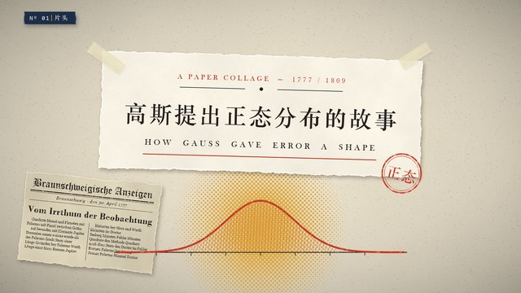

小兔叽勇者
作品集
关于我
♡ 打赏作者
GitHub ↗
做一些
有趣
的
事情吧！
✳
翻翻我的作品
↘
本期精选

高斯分布
给误差一个形状。
▶
✱
我的作品集
4
全部作品
科学故事
历史与人物
创意短片
收起 ×
视频暂时无法播放，请重试或下载观看。
↓ 下载视频 · MP4
嗨，我是小兔叽勇者。
喜欢故事，也喜欢把想法做出来。
如果你也觉得这些小作品有意思，欢迎来找我玩。
GitHub ↗
去抖音找我 ↗
手机扫一扫，常来串门！
抖音号 W1822991981
×
♡
打赏作者
收款码准备中
下次再来
请启用 JavaScript 以浏览视频作品。